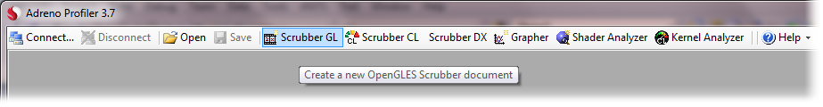
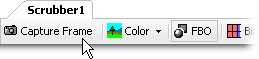
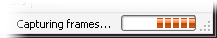
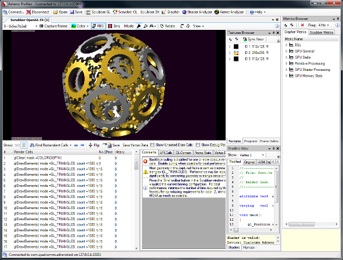
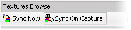

This tutorial explains the basics of using Adreno Profiler to capture and analyze OpenGLES frames from a mobile application.
After connecting to a device, create a new Scrubber GL document from the main toolbar.

Once the Scrubber appears, click the "Capture Frame" button on the scrubber's toolbar.

A progress bar will be visible at the bottom-right corner of the window while the capture is in progress.

After the frame's call trace and associated vertex, texture, and shader data has finished downloading, the frame is recreated in an OpenGLES emulator window.

At this point, a number of analysis features are made available:
 First, check the Comments tab to the right of the call
trace for performance problems detected by Adreno Profiler.
First, check the Comments tab to the right of the call
trace for performance problems detected by Adreno Profiler.
 Important statistics about the captured frame are displayed in the
Frame Stats tab to the right of the call trace.
Important statistics about the captured frame are displayed in the
Frame Stats tab to the right of the call trace.
 The captured frame's OpenGLES render calls are listed at the
bottom of the scrubber. Inspecting this flattened call trace often makes it easier to debug rendering
and performance issues.
The captured frame's OpenGLES render calls are listed at the
bottom of the scrubber. Inspecting this flattened call trace often makes it easier to debug rendering
and performance issues.
 OpenGLES context state, as of any (selected) draw call, can be viewed and modified in the
context state browser, at the bottom of the Scrubber.
OpenGLES context state, as of any (selected) draw call, can be viewed and modified in the
context state browser, at the bottom of the Scrubber.
 The scrubber's OpenGLES emulator can visualize
the captured frame in several ways, including wireframe, Z overdraw, and binning overlay modes.
The scrubber's OpenGLES emulator can visualize
the captured frame in several ways, including wireframe, Z overdraw, and binning overlay modes.
 If the button "Sync On Capture" was enabled in the
Textures Browser
upon capturing, all of the textures in the embedded OpenGLES context will be downloaded. They are used
when emulating the frame, and can also be viewed in the
Mipmaps Viewer.
If the button "Sync On Capture" was enabled in the
Textures Browser
upon capturing, all of the textures in the embedded OpenGLES context will be downloaded. They are used
when emulating the frame, and can also be viewed in the
Mipmaps Viewer.
• If the embedded application does not dynamically update any textures, "Sync On Capture" should be toggled off after the first capture to save time on subsequent captures.

 If any scrubber metrics were enabled upon capturing,
performance data will be measured for each individual mesh rendered by the embedded application
(each call to glDrawArrays and glDrawElements), and then displayed in additional columns alongside
the call trace.
If any scrubber metrics were enabled upon capturing,
performance data will be measured for each individual mesh rendered by the embedded application
(each call to glDrawArrays and glDrawElements), and then displayed in additional columns alongside
the call trace.
 The captured GLSL shaders can be edited and overridden
at runtime using the Shaders Viewer, while at the same time monitoring the
embedded application's real-time performance.
The captured GLSL shaders can be edited and overridden
at runtime using the Shaders Viewer, while at the same time monitoring the
embedded application's real-time performance.